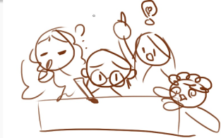

ParabolicPets es un juego interactivo que demuestra los principios físicos del movimiento parabólico. Inspirado en el concepto de Angry Birds, esta version del juego llega con el objetivo de experimentar con diferentes ángulos y velocidades en situaciones ya establecidas.
Conceptos físicos aplicados:
Trayectoria parabólica, gravedad, velocidad inicial, componentes vectoriales del movimiento.
